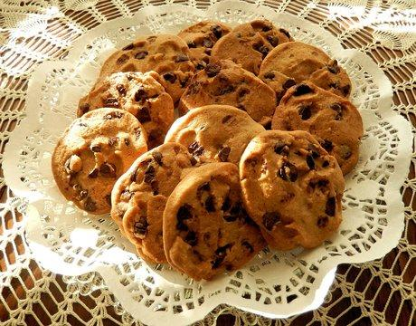

HAVE YOU EATEN COOKIES?
This website is for discussing everything about cookies. From about cookies, history of cookies, and what the types of cookies.
Read More
This website is for discussing everything about cookies. From about cookies, history of cookies, and what the types of cookies.
Read MoreAccording to historians, the earliest historical records of cookies indicate they were used as test
cake,
small portion of dough baked to check the oven's temperature.
The earliest biscuit style baked goods are believed to have originated in 7th century Persia. Persia
was
among the first regions to cultivate sugar, and a wide variety of cakes and pastries, in both large
and
small formats were already well known throughout the empire. Historians suggest that sugar
originated in
the lowlands of Bengal or elsewhere in Southeast Asia, from where it spread to Persia and
subsequently
to the eastern Mediterranean.
As the age of global exploration began, biscuits became an ideal provision, as they could remain
fresh
for long periods. For centuries, a specific type of "ship biscuit" a hard, iron like baked good was
a
staple on vessels departing from ports, as it could remain edible for months. In 17th and 18th
century
Europe, baking was a strictly regulated profession, overseen by various guilds or professional
associations. To become a baker, one had to complete a multi year apprenticeship, progressing from
apprentice to skilled worker, and finally to master baker.
Through these guilds, authorities could easily control the quantity and quality of baked goods. With
the
technological advancements of the 19th century Industrial Revolution, the capabilities of bakers
expanded, allowing for the commercial production of a diverse range of biscuits both sweet and
savory.
Although a much wider variety exists today, the fundamental ingredients used to make biscuits remain
unchanged. These ingredients include "soft" wheat flour, sugar, and fats, such as butter or oil.
